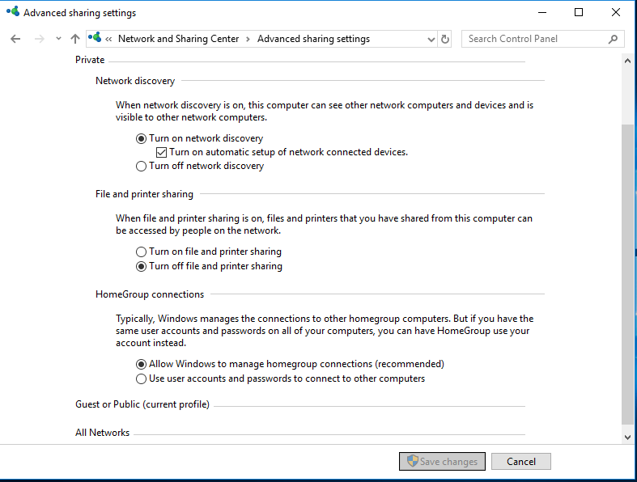
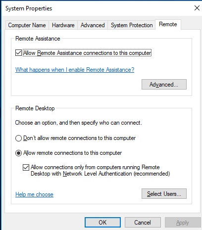
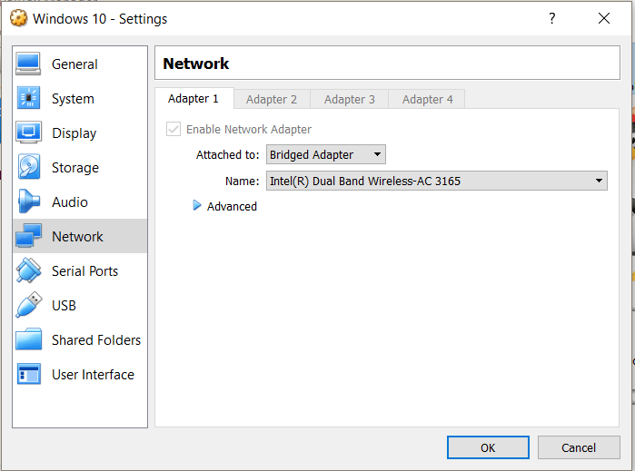
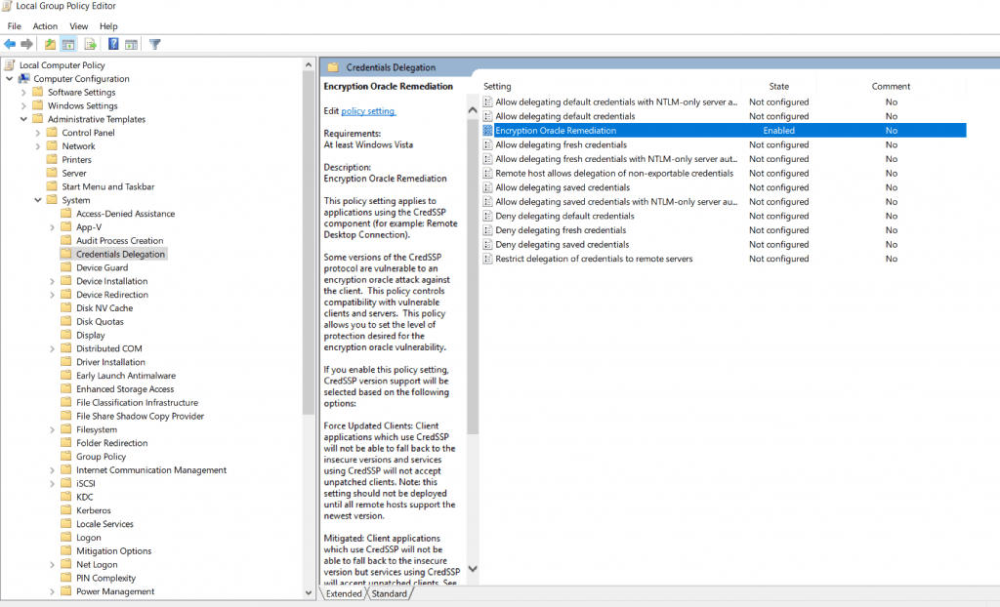
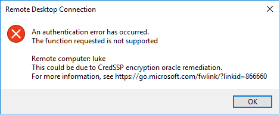
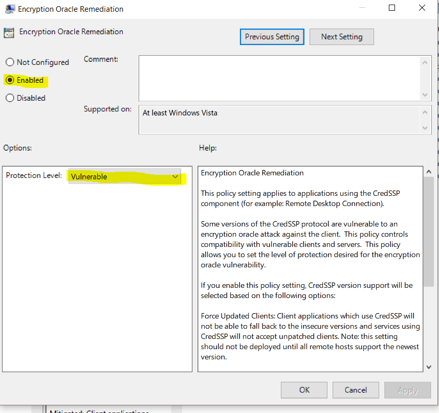

VirtualBox: Enabling RDP between windows 10 host and windows 10 VM
For practice I was setting up a personal home lab for network and penetration testing. When trying to allow everything to run as if it was one LAN network I ran into multiple configuration errors.
Problem:
Windows 10 host machine cannot RDP into virtual machine. All ping packets are dropped even though the virtual machine has internet connectivity.
Solution:
In VirtualBox, configure the network settings of the host machine to use bridged connection instead of the default NAT connection setting. This should hopefully allow the ping command to be used to test the connection between the host and guest.
To get RDP working, enable remote assistance on the guest machine and the host machine. Try to RDP into the virtual machine.
If that doesn’t work, check the network and sharing center. Go to advanced sharing settings. Under the private network, enable network discovery. Try to RDP into the guest machine again.
If you get an error such as: Remote Desktop Authentication Error Has Occurred. The function requested is not supported (like I did), change your group policy settings. Change the Group Policy on your local client to use the vulnerable setting. Run gpedit.msc and go to the following computer configuration » Administrative templates » System » Credentials Delegation » Encryption Oracle Remediation. Change setting to vulnerable.
-

Network Discovery
-

Remote Assistance
-

Bridged Connection
-

Group Policy Setting Location
-

Group Policy Error
-

Vulnerable Oracle Setting